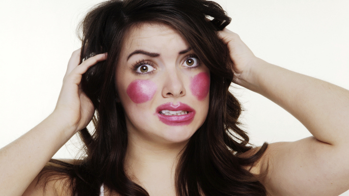
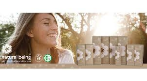
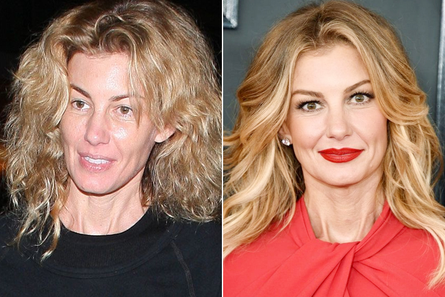
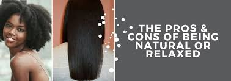

Being natural is not a statement, it is the closest i can get to being myself, even you out there reading my website it is also closest you can get being yourself. No amount of makeup can cover up an ugly personality. Some times people do not have confidents in thier look and they just decide to put on alot of make up so they could look pretty espically the young genaration, and when they are old thier face will be effected because it is already use to the makeup and that will cause wrinkles to thier face , because they started using makeup when they where still young.
CAN MAKEUP RUIN YPUR NATURAL BEAUTY??????
Yes it can, makeup cover a blimish under eyes bags and any other mark that you wish no one could see, while accentuating your beautiful features. However, getting carried away with beauty prouducts cam ruin your natural beauty MAKE-UP CELEBRITIES
Most celebrities appear to be the living embodiment of perfection images of what we all should aim to be whenever on a fashion shoot or the carpart, they are flawless. However every now and then we get a glimpse behind impeacable facade and we see the real person, no hair and makeup no flattering ligthing, and truth can be quite frankly frigthening
HOW INCREDIBLE NATURAL IS!!

>Being natural is incredibly empowering for women because its just who you are. You are embracing all the beautiful things about you from your head to your toes. Because when you mask so much of you natural beauty, people dont get to se that.
Less makeup is better, and its always better to let your natural beauty shine. essentially, be happy with your appearance.
LIfe is not always really glamorous and fabulous. Its about encouraging people to go back to natural beauty.
1 HOW TO KEEP YOUR SKIN HEALTHY WITHOUT MAKEUP
Wash ypur face twice daily. Skincare is a key factor in looking good without make on skin care. First and foremost, find a good facial wash thats suited to your skin type and use it twice a day in the morning and night.
Although it may be tempting to wash your face more than twice a day, this is not advisable over-washing can make your skin dry and irritable causing it to look worse rather than better
Develop a skin regimen for your face whatever regimen you choose stick to it and always follow through repeat the regimen in the morning and at night
WEAR MOISTURIZER DAILY TO KEEP YOUR SKIN HEALTHY
Every time you wash your face, you should follow it up with an application of facial moisturizer. Pick a quality moisturizer (preferably one with SPF in it) and apply it every day after washing OPT for a slightly richer moisturizer to waer at night.
Always choose a moisturizer thats suited to your skin type if you have sensetive skin, go for something gentle and unscented. If you are prone to pimples, try something light and non-oily
Drier skin types should go for heavier moisturizers wth soothing, nourishinig ingredients like shea butter or aloe vera
here are some pictutes of our we look when we are natural im even including hair here so people be free with the way you look do not stress about what the other people is gonna say about your beauty so i do not advise no one to use makeup for their face or use relax for their hair because it really ruins it. And if you think you not look nice without makeup just look for something healthy and not makeup